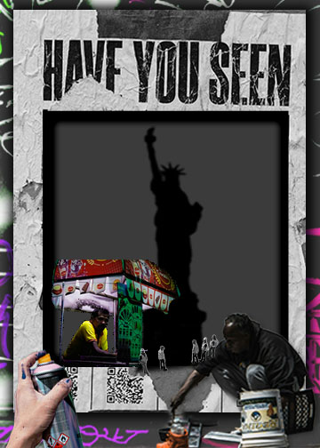

I chose to create a photomontage utilizing in total 7 images , the graffiti background, the spray can hand, the poster frame , the street vendor , the street artist , the construction crew and the statue of liberty. I wanted to create something that represented my city and how i grew up seeing my home , its meant to highlight the working class people and artists that make this city run. However with the ever growing gentrification , displacement and classism overtaking New York City, I want to emphazise the toll that superiority over the working class and minorites has led to. That being the disharmony and seggrigation of the city , where transplants continue to flock in and isntead of adapt and embrace nyc culture it is erased or belittled. The city of freedom, made by minorities and immigrants continues to shun them.
The concepts I explored when sourcing these images were trying to balance messy and raw with structure, the structure being the heigharchy between images and within the topic I focused on, the working class at the base of the poster to symbolize them being the bedrock of the city and roportion with the hand spraying the graffiti on. I used images from Unsplash and blended the statue into a darker layer to make it look like a silhouette, with the people being pops of color.